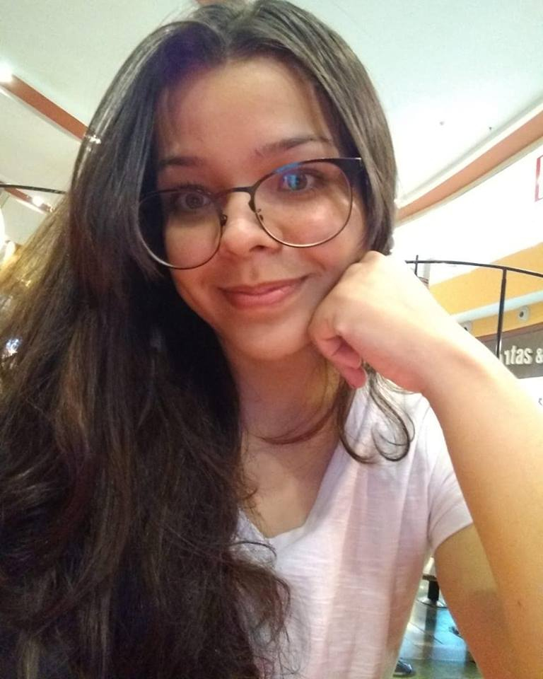
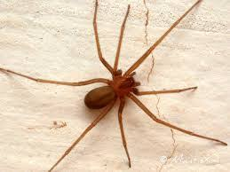

|  |
Curriculum Vitae
Alícia Duarte Evangelista |
|---|
Rua Viete da Silveira, nº 509, Conjunto Manoa, Cidade Nova - Manaus, AM - Brasil
Nascimento: 18 de março de 1999
Celular: +55 092 9 8472-4861
WhatsApp: +55 092 9 9135-6987
E-mail: itsaliduarte@gmail.com
Instagram: aliciaee_
Ensino Médio
Fundação Matias Machline
Manaus, AM - Brasil
2017 - Até o presente momento
Instituto Federal de Educação, Ciências e Tecnologia do Amazonas - Campus Manaus Centro
Manaus, AM - Brasil
Jan/2016 - Dez/2016
Ensino Fundamental II
Escola Estadual Letício de Campos Dantas
Manaus, AM - Brasil
2011 - 2015
Ensino Fundamental I
Escolinha Maria Imaculada
Manaus, AM - Brasil
2005 - 2010
Monitora Acadêmica de Física
Fundação Matias Machline
Matéria: Física
Função: Ministrar aulas de reforço para alunos do 1º ano
Mar/2017 - Dez/2017
Medalhas
Prata na 2ª Olimpíada Sesi de Matemática - 2018
Prata Regional na Olimpíada Internacional de Matemática sem Fronteiras - 2018
Bronze Nacional na Olimpíada Internacional de Matemática sem Fronteiras - 2018
Projeto Blog Moetá da Literatura
Fundação Matias Machline
Matéria: Língua Portuguesa
Função: Líder coordenadora na construção dos cronogramas relacionados ao projeto
Mar/2018 - Nov/2018
Microempreendora
Descrição de Atividade: No contexto da atividade, montei uma miniempresa de confeitaria, na qual
preparava, confeitava e vendia/revendia bolos e brigadeiros.
Período: Fev/2016 - Nov/2016
Principais Clientes: Alunos do Instituto Federal do Amazonas - Campus Manaus Centro
Portuguese: Native
Outras Áreas de Interesse
Expressão Vocal
Biologia voltada à saúde, estrutura e funcionamento dos órgãos do corpo humano
Matemática
Física I
Gramática da Língua Portuguesa
Topografia
|  | Por que tem esse medo?
Em 2017, eu e minha irmã tínhamos nos mudado. Semanas depois, meu cunhado achou na parede da cozinha uma aranha marrom adulta. Até aí tudo bem, mas depois ele falou que a picada dessa aranha causava necrose. Fui pesquisar imagens de necrose pra saber como ficava a pele depois da picada. Foi uma péssima ideia entrar na aba de imagens. FOI HORRÍVEL. Na mesma noite, meu cunhado pôs um emaranhado de linhas de costura na minha cama. Quando deitei, ele falou que tinha uma aranha marrom do meu lado e eu fiquei super desesperada. |
Áudio 1:
Áudio 2:
Informe alguns vídeos do Youtube favoritos seus.
Meu sonho é viajar para Santorini, na Grécia, para conhecer a melhor vista de pôr-do-sol do mundo.
Outro sonho é contribuir na cidadania com a área de saúde.
Em relação à FMM, por que escolheu o curso de Informática?
Adorava resolver questões de Matemátic que trabalhavam o raciocínio lógico.
E quem me apresentava tais questões era um amigo que cursava Informática no IFAM.
E isso me motivou a escolher tal curso. Pena que, ao entrar no curso, conheci a realidade dele.